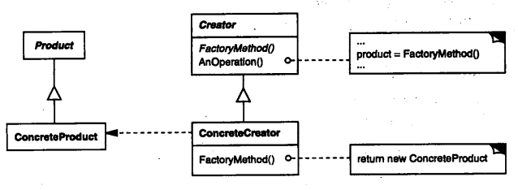

设计模式的六大原则：
- 单一职责原则：就一个类而言，应该仅有一个引起它变化的原因
- 开闭原则：对扩展开放，对修改关闭。对程序进行拓展的时候不能去修改原有的代码
- 里氏代换原则：任何基类出现的地方子类都一定可以出现
- 依赖倒转原则：对接口编程，依赖于抽象而不依赖于具体（面向抽象，解决了上层组件和和具体实现之间的关联性？）
- 接口隔离原则：
- 最少知道原则（迪米特法则）：一个实体应当尽量少的与其他实体之间发生相互作用，使得系统功能模块相互独立（高内聚，低耦合？）
- 合成复用原则：尽量使用合成/聚合的方式，而不是使用继承，继承会把父类所有的共有和受保护的成员继承下来，但这些东西可能是不需要的，并且导致类膨胀；使用组合比较灵活，减少对类的依赖性——貌似没有这个原则
三种模式：
- 创建型模式：就是创建对象的模式，抽象了实例化的过程。它帮助一个系统独立于如何创建、组合和表示它的那些对象。关注的是对象的创建，创建型模式将创建对象的过程进行了抽象，也可以理解为将创建对象的过程进行了封装，作为客户程序仅仅需要去使用对象，而不再关心创建对象过程中的逻辑。
- 结构型模式是为解决怎样组装现有的类，设计他们的交互方式，从而达到实现一定的功能的目的。结构型模式包容了对很多问题的解决。例如：扩展性（外观、组件、代理、装饰）封装性（适配器，桥接）
- 行为型模式涉及到算法和对象间职责的分配，行为模式描述了对象和类的模式，以及它们之间的通信模式，行为型模式刻画了在程序运行时难以跟踪的复杂的控制流，可分为行为类模式和行为对象模式
- 1.行为模式使用继承机制在类间分派行为
- 2.行为对象模式使用对象聚合来分配行为。一些行为对象模式描述了一组对等的对象怎样相互协作以完成其中任何一个对象都无法单独完成的任务。
创建型模式：
- 单例模式：
- 为什么使用单例模式：产生和管理一个独立对象，而且不允许产生另一个这样的对象
- 应当遵循哪些原则：
- 一个设计合理的单例模式至少应该执行“dead_reference检测”
- 不存在最佳方案，根据需要解决实际问题
- 实现点：
- 静态数据+静态函数 != singleton
- 保证唯一性：将拷贝构造和拷贝赋值运算符禁掉
- 保护措施：将析构声明为private，拥有Singleton对象指针者就不会意外删除之
- 初始化和清理工作：不是一件容易的事情
- 谨慎dead-reference
- 具体实现方式：
- 对象工厂：定义一个用于创建对象的接口，让子类决定实例化哪一个类。Factory Method使一个类的实例化延迟到其子类
- 解决什么问题：面向对象的技术总是企图打破对具象型别的依存性，然而在C++中，对象的生成却将调用者绑死于最底层具象派生类
- 可能不直接调用new，而是调用某一具有更高级别的对象中的虚函数Create，从而让客户可以通过多态性来改变行为
- 了解型别信息，但这种信息无法以C++表达，如可能拥有一个字符串包含"Derived"，因此需要产生一个Derived的对象
- 使用场景：
- 哪些情况下需要对象工厂？
- 第一种情况：程序库不仅需要操作用户自定义对象，还需要产生他们
- 第二种情况：第一种情况产生的对象需要以某种标识符保存其实际型别，通过其标识符再取出具体对象
- 当一个类不知道她所必需创建的对象的类的时候
- 当一个类希望由它的子类来指定它所创建的对象的时候
- 当类将创建对象的职责委托给多个帮助子类种的一个，并且你希望将哪一个帮助子类是代理者这一信息局部化的时候——？
- 主要用于面向对象程序框架和程序库，以及各种串流处理和对象持久的设计中
- 参与者：
- Product：定义工厂方法所创建的对象的接口——？
- ConcreteProduct：实现Product的接口
- Creator：声明工厂方法，该方法返回一个Product对象，Creator也可以定义一个工厂方法的缺省实现，返回一个缺省的ConcreteProduct对象
- ConcreteCreator：重定义工厂方法以返回一个ConcreteProduct实例
- 优缺点：
- 优点：
- 工厂方法不再将与特定应有有关的类绑定到你的代码中
- 与多态相比，将型别绑定于实值的动作被推迟的更远，是一种懒初始化的方式
- 缺点：客户可能仅仅为了创建一个特定的ConcreteFactory对象就不得不创建Creator的子类
- 实现：
- 主要有两种不同的情况：
- Creator是一个抽象类并且不提供它所声明的工厂方法的实现
- Creator是一个具体类而且为工厂方法提供了一个缺省的实现
- 参数化工厂方法
- 使用模板以避免创建子类
- 一个可伸缩的工厂的具体设计：
- 注册：型别标识符ID和用于产生对象的函数指针/仿函数
- 型别标识符：用来标识具体对象的型别，由于C++静态型别系统之故，必须先有一个型别标识符，才能生成一个产品；型别标识符的管理由用户负责
- 对象生产者：函数或仿函数专门用来生成某一类对象。通过函数指针来模塑产品生产者
- 取消注册
- 参数化工厂方法：通过型别标识符返回具体对象

- 抽象工厂：提供一系列相关或相互依赖对象的接口（多态对象），而无需指定他们具体的类
- 干啥的：把对象的创建封装在一个类中，这个类的唯一任务就是按需生产各种对象
- 适用性：
- 一个系统要由多个产品系列中的一个来配置时
- 参与者：
- AbstractFactory：声明一个创建抽象产品对象的操作接口
- ConcreteFactory：实现创建具体产品对象的操作
- AbstractProduct：为一类产品对象声明一个接口
- ConcreteProduct：定义一个将被相应的具体工厂创建的产品对象；实现AbstractProduct接口
- client：仅使用由AbstractFactory和AbstractProduct类声明的接口
- 实现：
- 将工厂作为单例
- 创建产品：AbstractFactory仅声明一个创建产品的接口，真正创建产品是由ConcreteProduct子类实现，最通常的办法是为每一个产品定义一个工厂方法。Abstract Factory要求所有对象族系的生成函数都要集中于唯一接口。所以针对待生成物的每一个族系，都必须为这一接口提供一份实作版本——？
- 使用场景：
- 一个系统要独立于它的产品的创建，组合和表示时——？
- 一个系统要由多个产品系列中的一个来配置时
- 当你要强调一系列相关的产品对象的设计以便进行联合使用时——？
- 当你提供一个产品类库，而只想显示它们的接口而不是实现时
- 协作：
- 通常在运行时刻创建一个ConcreteFactory类的实例，这一具体的工厂创建具有特定实现的产品对象。为创建不同的产品对象，客户应使用不同的具体工厂
- 优缺点：
- 优点：
- 分离了具体的类。Abstract Factory模式帮助你控制一个应用创建的对象的类。因为一个工厂封装创建产品对象的责任和过程，它将客户与类的实现分离。
- 使得易于交换产品系列
- 有利于产品的一致性
- 缺点：
- 对型别需求很强烈
- 难以支持新种类的产品

结构型模式：
- 适配器模式（类对象结构型模式）：将一个类的接口转换成客户希望的另一个接口，使得原本由于接口不兼容而不能一起工作的那些类可以一起工作
- 使用场景：
- 想使用一个已经存在的类，而他的接口不符合你的需求
- 想创建一个可以复用的类，该类可以与其他不相关的类或不可预见的类协同工作——？
- 想使用一些已经存在的子类，但是不可能对每一个都进行子类化以匹配他们的接口。对象适配器可以适配它的父类接口——？
- 参与者：
- Target：定义与Client使用的与特定领域相关的接口
- Adaptee：已经存在的接口，这个接口需要适配
- Adapter：对Adaptee和Target接口进行适配
- 效果：类适配器和对象适配器有不同的权衡
- 类适配器：
- 想匹配一个类以及所有它的子类时类Adapter将不能胜任
- 使得Adapter可以重新定义Adaptee的部分行为
- 仅仅引入一个对象，并不需要额外的指针以简介得到adaptee
- 对象适配器
- 允许一个Adapter与多个Adaptee（Adaptee本身和它的子类）
- 重定义Adaptee的行为比较困难，这就需要Adaptee的子类并且使得Adpater引用这个子类而不是引用Adaptee本身
- 协作：Client在Adapter上调用一些操作，接着适配器调用Adaptee的操作实现这个请求
- 实现：
- 实现类适配器时Adapter类应该采用公共方式继承Target类，以私有方式继承Adaptee类，因此Adapter是Target的子类而不是Adaptee的字类型
- 可插入的适配器
- 在项目中的应用和思考：
- t2sdk_ust中Adapter需要多个Adaptee（api类，回调类，配置接口类）
- 类适配器在什么情况下会用到？

- 桥接(Bridge)模式（对象结构型模式，Handle/Body）：将抽象部分和它的实现部分分离，使他们都可以独立的变化
- 动机：当一个抽象有多个实现时，通常用继承来协调他们。抽象类定义对该接口的抽象，具体的子类则用不同方式加以实现，但此方式使得继承机制将抽象部分与它的实现部分固定在一起，难以对抽象部分和实现部分独立的进行修改，扩充和重用
- 使用场景：
- 不希望在抽象和他的实现部分之间有一个固定的绑定关系，这种情况可能是因为，在程序运行时刻，实现部分应可以被选择或者切换——？什么情况下在程序运行时刻实现部分需要选择或切换？
- 抽象和实现都可以通过生成子类的方式加以扩充，这时Bridge模式使你可以对不同的抽象接口和实现部分进行组合，并分别对他们进行扩充
- 对一个抽象的实现部分的修改应对客户不产生影响，即客户的代码不必重新编译——对抽象的实现进行修改，不需要桥接模式就可以实现？
- 想对客户完全隐藏抽象的实现部分。在C++中类的表示在类接口中是可见的——即实际实现的类完全不用展示给用户，这个有什么好处吗？
- 有许多类要生成，这样的一种类层次结构说明必须将一个对象分解成两部分——？
- 想在多个对象间共享实现，但同时要求客户不知道这一点——使用场景
- 参与者：
- Abstraction：
- 定义抽象类接口
- 维护一个指向Implementor类型对象的指针
- RefeinedAbstraction：扩充由Abstraction定义的接口
- Implementor：定义实现类的接口，这些接口不一定要与Abstraction一致，事实上可以完全不同。一般来说Implementor接口仅提供基本操作，而Abstraction则定义了基于这些基本操作的较高层次的操作
- ConcreImplementor：实现Implementor接口并定义它的具体实现
- 优缺点：
- 优点：
- 分离接口及其实现部分。一个实现未必不变的绑定在一个接口上，抽象类的实现可以在运行时刻配置，一个对象甚至可以在运行时刻改变他的实现；另外接口和实现分离有助于分层，从而产生更好的结构化系统，系统的高层部分只需要知道Abstraction和Implementor即可。
- 提高可扩充性。可以独立的对Abstraction和Implementor层次结构进行扩充
- 实现细节对客户隐藏
- 缺点：？
- 协作：Abstraction将client的请求转发给它的Implementor对象
- 实现：
- 仅有一个Implementor：在仅有一个实现的时候，没有必要创建一个抽象的Implementor
- 创建正确的Implementor对象：当存在多个Implementor类的时候，应该用何种方法，在何时何地创建哪个Implementor对象——？
- 共享Implementor对象——？
- 采用多重继承机制——待实现
- 怎样将正确的Implementor对象传给Abstraction对象？怎样使用抽象工厂来创建和配置一个特定的Bridge模式
- 相关模式：
- 抽象工厂可以用来创建和配置一个特定的Bridge模式
- Adapter模式用来帮助无关的类协同工作，他通常在系统设计完成后才会被使用，而Bridge模式在系统开始时就被使用，它使得抽象接口和实现部分可以独立进行改变
- 在项目中的应用和思考：

- 组合(Composite)模式（对象结构型模式）：将对象组合成树形结构以表示“部分-整体”的层次结构，Composite使得用户对单个对象和组合对象的使用具有一致性（整体和部分可以被一致对待的问题）
- 使用场景：
- 想表示对象的部分-整体层次结构——？
- 你希望用户忽略组合对象和单个对象的不同，用户将统一地使用组合结构的所有对象——在什么场景下？
- 参与者：
- Component：
- 为组合中的对象声明接口
- 在适当的情况下实现所有类共有接口的缺省行为
- 声明一个接口用来访问和管理Component的子组件
- （可选）在递归结构中定义一个接口，用于访问一个父部件，并在合适的情况下实现它——？
- Leaf：
- 在组合中表示叶节点对象，叶节点没有子节点
- 在组合中定义图元对象的行为
- Composite：
- 定义有子部件的那些部件的行为
- 存储子部件
- 在Component接口中实现与子部件有关的操作
- Client：通过Component接口操纵组合部件的对象
- 协作：用户使用Component类接口与组合结构中的对象进行交互。如果接收者是一个叶节点则直接处理请求，如果接收者是Composite，它通常将请求发送给它的子部件，在转发请求之前或之后可能执行一些辅助操作
- 效果：
- 定义了包含基本对象和组合对象的类层次结构。基本对象可以被组合成更复杂的组合对象，而这个组合对象又可以被组合成更复杂的组合对象，这样不断递归下去。用户代码中任何用到基本对象的地方都可以用到组合对象——为什么要这样用？
- 简化用户代码：用户可以一致的使用组合结构和单个对象，通常用户不知道（也不关心）处理的是一个叶节点还是一个组合组件，这就简化了用户代码，因为在定义组合的那些类中不需要写一些充斥着选择语句的函数——什么情况下需要这样用？
- 更容易增加新类型的组件。新定义的Composite或Leaf子类自动的与已有的结构和用户代码一起工作，客户程序不需要因新的Component类而改变
- 容易增加新组件产生一个问题：很难限制组合中的组件。无法依赖类型系统增加约束，只能在运行时刻进行检查
- 实现：
- 显式的父部件引用，父部件引用可以简化结构的上移和组件的删除，同时父部件引用也支持职责链（？）。通常在Component类中定义父部件的引用，Leaf和Composite类可以继承这个引用以及管理这个引用的那些操作
- 共享组件：共享组件是很有用的，但只有当一个组件只有一个父部件时很难共享组件——？
- 最大化Component接口。Composite模式的目的之一是使得用户不知道他们正在使用的具体的Leaf类和Composite类，为了达到这一目的，应尽可能的定义公共接口，Component类通常要为这些操作提供缺省的实现，而Leaf和Composite可以对他们进行重定义
- 声明管理子部件中的操作：用于管理子部件的操作对Leaf类是没有意义的，是否需要定义到Component中？这就需要在安全性和透明性之间作出权衡选择。
- 在类层次结构的根部定义子节点管理接口的方法具有良好的透明性，但这一方法是以安全性为代价的，因为用户有可能会做一些无意义的事情如在Leaf中增加和删除对象等
- 在Composite类中定义管理子部件的方法具有良好的安全性，任何从Leaf中增加或删除是不可能的，但这又损失了透明性，因为在Leaf和Composite具有不同的接口
- 综上，在这一模式中相对于安全性更强调透明性
- 在项目中的应用和思考：

- 装饰(Decorator)模式（对象结构型模式）：动态地给一个对象添加一些额外的职责（就增加的功能来说装饰器模式相比生成子类更为灵活）
- 动机：有时候需要给某个对象 而不是整个类添加一些功能，使用继承也可以，但是子类行为是静态的而用户不能动态的控制
- 使用场景：
- 在不影响其他对象的情况下，以动态，透明的方式给单个对象添加职责
- 处理那些可以撤销的职责——？
- 当不能采用生成子类的方法进行扩充时，分两种情况
- 可能有大量独立的扩展，为支持每一种组合将产生大量的子类，使子类数目呈爆炸性增长；
- 类定义被隐藏。或者类定义不能用于生成子类
- 参与者：
- Component：定义一个对象接口，可以给这些对象动态地添加职责
- ConcreteComponent：定义一个对象，可以给这个对象添加一些职责
- Decorator：维持一个指向Component对象的指针，并定义一个与Component接口一致的接口
- ConcreteDecorator：向组件添加职责
- 协作：
- Decorator将请求转发给Component对象，并有可能在转发请求前后执行一些附加的动作
- 效果：
- 优点：
- 比静态继承更加灵活
- 避免在层级结构高层的类有太多的特征。Decorator模式提供了一种“即用即付”的方法来添加职责，他并不试图再一个复杂的可定制的类中添加功能，可以从简单的部件组合出复杂的功能
- 缺点：
- Decorator与它的Component不一样。Decorator是一个透明的包装，使用装饰时不应该依赖对象标识
- 使用Decorator模式进行系统设计会产生很多小对象，这些小对象仅在相互连接的方式上有所不同，而不是他们的类或他们的属性值有所不同
- 当Component类原本就很庞大时使用Decorator模式代价太高，Stratety模式相对更好一些
- 实现：
- 接口的一致性：装饰对象的接口必须要与它所修饰的Component的接口一致，因此所有的具体Decorator类必须有一个公共父类
- 省略抽象的Decorator类：当仅需要添加一个职责时没必要定义抽象的Decorator类
- 保持Component类的简单性：为了保证接口的一致性，组件和装饰必须有一个公共的Component父类，因此保持这个类的简单性很重要，它应集中于定义接口而不是存储数据。对数据表示的定义应延迟到子类中，否则Component类会变得过于复杂和庞大；功能也不能太多，否则会导致子类有一些它们并不需要的功能；
- 改变对象外壳与改变对象内核：可以将Decorator看作一个对象的外壳，它可以改变这个对象的行为。另一种方法是改变对象的内核，如Strategy模式；区分这两种模式的场合：当Component类很庞大时使用Decorator模式代价太高，Strategy模式相对更好一点
- 相关模式：
- Adapter模式：装饰器改变对象的职责而不改变它的接口；而适配器给对象一个全新的接口
- Composite模式：
- Stratety模式：两种改变对象的途径：装饰改变对象的外表，策略模式改变对象的内核
- Decorator模式中装饰对组件是透明的
- Strategy中component组件本身知道可能进行哪些扩充，因此必须引用并维护相应的策略
- 在项目中的应用和思考：
- 由于Decorator模式仅从外部改变组件，因此组件无需对它的装饰有任何了解，也就是说这些装饰对该组件是透明的

- 外观(Facade)模式（对象结构型模式）：为子系统中的一组接口提供一个一致的界面，Facade模式定义了一个高层接口，这个接口使得这一子系统更加容易使用
- 动机：将一个系统划分为若个子系统有利于降低系统的复杂性。一个常见的设计目标是使子系统之间的通信和相互依赖关系达到最小。达到该目标的途径之一就是引入一个外观模式，它为子系统中较为一般的设施提供了一个单一而简单的界面——与中介模式的区别（中介者是为了解决对象之间的相互依赖）
- 使用场景：
- 当需要为一个复杂子系统提供一个简单接口时。子系统往往因不断演化变的越来越复杂
- 客户程序与抽象类的实现部分存在着很大的依赖性。引入facade将这个子系统与客户以及其他子系统分离，可以提高子系统的独立性以及可移植性
- 需要构建一个层次结构的子系统时，使用facade模式定义子系统中每层的入口点。如果子系统之间是相互依赖的，可以让它们仅通过facade进行通讯，从而简化了他们之间的依赖关系——这不就是中介模式吗
- 优缺点：
- 优点：
- 对客户屏蔽子系统组件，因而减少了客户处理的对象的数目并使得子系统使用起来更加方便
- 实现了子系统与客户之间的松耦合关系；Facade模式有助于建立层次结构系统，也有助于对对象之间的依赖关系分层。Facade模式可以消除复杂的循环依赖关系——可以做到吗？
- 如果需要，并不限制客户使用子系统类。因此可以在系统的易用性和通用性之间加以选择
- 参与者：
- Facade：
- 知道哪些子系统负责处理请求
- 将客户的请求代理给适当的子系统对象
- Subsystem classes：
- 实现子系统的功能
- 处理由facade对象指派的任务
- 没有facade的任何相关信息
- 实现：
- 降低客户-子系统之间的耦合性：用抽象类实现Facade而它的具体子类对应于不同的子系统实现。可以进一步降低客户与子系统的耦合度，这样客户就可以通过抽象的Facade类接口与子系统通讯
- 公共子系统类与私有子系统类——？
- 协作：
- 客户通过发送请求给Facade的方式与子系统通讯，Facade将这些消息转发给适当的子系统对象
- 使用Facade的客户程序不需要直接访问子系统对象
- 相关模式：
- 通常来说仅需要一个Facade模式，所以Facade通常属性Singleton模式
- 抽象工厂可以与Facade一起使用以提供一个接口，这一接口可用来以一种子系统独立的方式创建子系统对象
- 中介者与Facade的相似之处是它抽象了一些已有的功能，但Mediator的目的是对同事之间的任意通讯进行抽象，Mediator的同事知道中介者并与它通信，而不是直接与其他对象通信；相对而言Facade仅对子系统对象的接口进行抽象，不定义新功能，子系统也不知道facade的存在

- 享元(flyweight)模式（对象结构型模式）：运用共享技术有效的支持大量细粒度对象
- 动机：
- flyweight是一个共享对象，它可以在多个场景中使用，并且在每个场景中flyweight都可以作为一个独立的对象；flyweight不能对它所运行的场景做出任何假设，这里的关键概念是内部状态和外部状态之间的区别
- 两个概念：
- 内部状态：在享元对象内部并且不会随着环境改变而改变的共享部分
- 外部状态：随着环境的改变而改变，不可用共享的状态就是外部状态
- 适用性：Flyweight模式的有效性很大程度上取决于如何使用它以及在何处使用它。当以下情况都成立时使用Flyweight模式：对那些通常因为数量太大而难以用对象来表示的概念或实体进行建模
- 一个应用程序使用了大量的对象，完全由于使用大量对象，造成很大的存储开销
- 对象的大多数状态都可以变为外部状态
- 如果删除对象的外部状态，那么可以用相对较少的共享对象取代很多组对象
- 应用程序不依赖于对象标识。由于Flyweight对象可被共享，对于概念上有明显的对象，标识测试将返回真值
- 参与者：
- Flyweight：描述一个接口，通过这个接口flyweight可以接受并作用于外部状态
- ConcreteFlyWeight：实现Flyweight接口，并为内部状态增加存储空间。ConcreteFlyweight对象必须是可共享的。它所存储的状态必须是内部的，即它必须独立于ConcreteFlyweight对象的场景
- UnsharedConcreteFlyweight：并非所有的Flyweight子类都需要被共享。可以解决那些不需要共享对象的问题。Flyweight接口使得共享成为可能，但他并不强制共享。
- FlyweightFactory：
- 创建并管理flyweight对象
- 确保合理的共享flyweight。当用户请求一个flyweight时，flyweightfactory提供一个已经创建的实例或创建一个
- client：
- 维持一个对flyweight的引用
- 计算或存储一个（多个）flyweight的外部状态
- 协作：
- flyweight执行时所需要的状态必定是内部的或外部的。内部状态存储于ConcreteFlyweight对象之中；外部对象则由Client对象存储或计算。当用户调用flyweight对象的操作时将该状态传递给它
- 用户不应直接对ConcreteFlyweight类进行实例化，而只能从FlyweightFactory对象得到ConcreteFlyweight对象，这可以保证对他们适当的进行共享。
- 效果：
- 使用Flyweight模式时，传输，查找和计算外部状态都会产生运行时开销，尤其当flyweight原先被存储为内部状态时。然而空间上的节省抵消了这些开销。共享的flyweight越多，空间节省也就越大，存储节约由以下几个因素决定：
- 因为共享，实例总数减少的数目
- 对象内部状态的平均数目
- 外部状态是计算的还是存储的
- 实现：需要注意以下几点：
- 删除外部状态：该模式的可用性在很大程度上取决于是否容易识别外部状态并将它从共享对象中删除。。。
- 管理共享对象：因为对象是共享的，用户不能直接对它进行初始化。因此FlyweightFactory可以帮助用户查找某个特定的Flyweight对象；共享对象还意味着某种形式的引用计数和垃圾回收，这样当一个Flyweight不再使用时可以回收他的存储空间

- 代理(Proxy)模式（对象结构型模式）：为其他对象提供一种代理以控制对这个对象的访问
- 动机：对一个对象进行访问控制的一个原因是为了只有在我们确实需要这个对象时才对他进行创建和初始化
- 使用场景：在需要用比较通用和复杂的对象指针代替简单的指针的时候使用proxy模式
- 远程代理：为一个对象在不同的地址空间提供局部代表——？
- 虚代理：根据需要创建开销很大的对象，只有在确实需要这个对象时才对它进行创建和初始化（懒初始化？）可以进行最优化，例如根据需求创建对象
- 保护代理：控制对原始对象的访问。保护代理用于对象应该有不同的访问权限的时候
- 智能指引（可以理解为添加一些附加操作）：当调用真实对象时，代理处理另外一些事
- 对指向实际对象的引用计数
- 其他操作
- 参与者：
- Proxy：
- 保存一个实体引用使得代理可以访问实体，如果RealSubject和Subject的接口相同，Proxy会引用Subject
- 提供一个与Subject相同的接口，这样代理类Proxy就可以用来替代实体
- 控制对实体的存取，并可能负责创建和删除它
- 其他功能依赖于代理的类型：
- 远程代理负责对请求及其参数进行编码，。。。
- 虚代理：可以缓存实体的附加信息，以便延迟对它的访问
- 保护代理：检查调用者是否具有实现一个请求所必须的访问权限
- Subject：定义RealSubject和Proxy的公用接口，这样就在任何使用RealSubject的地方都可以使用Proxy
- RealSubject：Proxy所代表的实体
- 效果：代理模式在访问对象时引入了一定程度的间接性，根据代理的类型，附加的间接性有多种用途：
- Remote Proxy：可以隐藏一个对象存在于不同地址空间的事实
- Virtual Proxy可以进行最优化，例如根据要求创建对象
- Protection Proxy和Smart Proxy都允许在访问一个对象时有一些附加的内务处理
- copy-on-write的优化方式：该优化与根据需要创建对象有关，拷贝一个庞大而复杂的对象是一种开销很大的操作，如果这个拷贝操作根本没有被修改，那么这些开销就没有必要。用代理延迟这一拷贝过程，可以保证只有当这个对象被修改的时候才对它进行拷贝；实现Copy-on-write时必须对实体进行引用计数；Copy-on-Write可以大幅降低拷贝庞大实体时的开销
- 实现：
- 重载C++中的存取运算符->。重载这一运算符使你可以在撤销对一个对象的引用时执行一些附加的操作——？
- Proxy并不总是需要知道实体的类型
- 相关模式：
- Adapter模式：Adapter为他所适配的对象提供了一个不同的接口，相反代理提供了与他的实体相同的接口，然而用于访问保护的代理可能会拒绝执行实体会执行的操作，他的接口实际上可能只是实体接口的一个子集
- Decorator模式：装饰模式为对象添加一个或多个功能，代理模式控制对对象的访问
- 实际中的应用与思考：
- subject的目的仅仅是提供一套统一的接口使得代理类和实际类都使用？客户端持有的依然是代理类和实际类？

行为模式：行为模式涉及到算法和对象间职责的分配，行为模式不仅描述对象或类的模式，还描述他们之间的通信模式。行为类模式使用继承机制在类间分配行为；对象行为模式使用对象复合而不是继承。一些行为对象模式描述了一组对等的对象怎样相互协作已完成其中任意一个对象都无法单独完成的任务。
- 职责链(Chain of responsibility)（对象行为模式）：使多个对象都有机会处理请求（什么情况下需要多个对象处理请求？），从而避免请求的发送者和接收者之间的耦合关系（怎么做到避免耦合的？）。将这些对象连成一条链，并沿着这条链传递该请求，直到有一个对象处理他为止。
- 处理过程：从第一个对象开始，链中收到请求的对象要么亲自处理他，要么转发给链中的下一个候选者。提交请求的对象并不明确知道哪一个对象将会处理它
- 应用场景：
- 有多个对象可以处理一个请求，哪个对象处理该请求运行时刻自动确定
- 想在不明确指定接收者的情况下向多个对象中的一个提交一个请求——？
- 可处理一个请求的对象集合应被动态指定——？
- 例如：一个gui程序界面中的上下文有关的帮助机制
- 参与者：
- Handler：定义一个处理请求的接口
- ConcreteHandler：
- 处理它所负责的请求
- 可访问它的后继者
- 如果可处理该请求，就处理之；否则将该请求转发给它的后继者
- Client：向链上的具体处理者对象提交请求
- 协作：当客户提交一个请求时，请求沿着传递链直至有一个ConcreteHandler对象负责处理它
- 效果：
- 降低耦合度：该模式使得一个对象无需知道哪一个对象处理其请求。职责链可简化对象间的相互连接，它们仅需要保持一个指向其后继者的引用，而不需要保持它所有的候选接收者的引用
- 增强了给对象指派职责的灵活性：可以通过在运行时刻对该链进行动态的增加或修改来增加或改变处理一个请求的那些职责。可以将这种机制与静态的特例化处理对象的继承机制结合起来使用——静态的特例化处理对象的继承机制是什么机制？
- 不保证被接收和处理
- 实现：
- 实现后继者链，有两种方式实现后继者链：
- 定义新链接，通常在Handler中定义，但也可由ConcreteHandlers来定义
- 使用已有的链接，如在一个部分整体层次结构中，父构件应用可定义一个部件的后继者——待验证？
- 连接后继者：client中的handler变量需要指向第一个Concretehandler1的指针实例，ConcreteHandler1中需要保存ConcreteHandler2中的指针实例，以此类推
- 表示请求：可以用硬编码，或者请求函数，封装请求对象等
- 相关模式：
- 与Composite一起使用，这种情况下一个构件的父构件可以作为它的后继——待验证
- 在项目中的应用和思考
- 在涉及到对请求或命令进行处理时可以采用职责链模式，这种场景下和状态模式有什么区别？
- 如果不使用职责链模式，client中将使用大量的ConcreteHandler对象；使用职责链之后，只需要保存一个handler对象，但每个ConcreteHandler需要保存下一个ConcreteHandler对象

- 命令(Command)模式（对象行为模式）：将一个请求封装为一个对象，从而使你可用不同的请求对客户进行参数化；对请求排队或记录请求日志，以及支持可撤销的操作——？。Command模式是回调机制中一个面向对象的替代品
- 泛化仿函数：
- 概念：是一种威力强大的抽象概念，用以降低对象之间的联系。泛化仿函数对那种“有必要将请求存储于对象内”的设计特别有用，Command设计模式用来描述“经过封装之请求”，泛化仿函数便是遵循这一模式。具体而言，泛化仿函数是“将C++所允许的任何处理请求封装起来后，获得的具备型别安全性质的高级对象”，更详细地说，泛化仿函数：
- 可封装任何处理请求
- 具备型别安全
- 是一种带有"value"语义的对象，因为它充分支持拷贝，赋值和传值
- 通过泛化仿函数：
- 可以将处理请求存储为数值，作为参数来传递，并在原理创建点之处调用
- 是函数指针的高级版本，函数指针和泛化仿函数的本质区别在于，后者可以存储状态，并可以调用成员函数
- 效果/适用性：：
- 接口分离。invoker（请求者）和receiver（接收者）解耦，invoker不知道Command做何种操作，只在条件成熟的时候调用之；receiver的Action成员函数也不知道是否被invoker或其他什么对象调用
- 时间分离。从时序上看，需要延迟处理，即“执行某动作需要的环境”的时刻和执行该动作时刻并不相同；在两个时刻之间，程序将该处理请求当作一个对象来保存和传递。如果没有这种时序上的需要，就不会有Command模式的存在。Command保存了一个整装待发的处理请求，供将来运用
- Command对象可像其他对象一样被操纵和扩展，增加新的Command很容易，因为这无需改变已有的类
- 较容易地设计一个命令队列，可将多个命令配装成一个复合命令，一般来说，复合命令是Composite模式的一个实例
- 可以在不同的时候指定，排列和执行请求。一个Command模式可以有一个与初始请求无关的生存期
- 支持取消操作。Command的Excute操作可在实时操作前讲状态保存起来，在取消操作时这个状态用来消除该状态的影响
- 支持修改日志——？不就是加一条日志吗？这个回调函数也可以做到，有什么区别？
- 用构建在原语操作上的高层操作构造一个系统——？
- 允许接收请求的一方决定是否要否决请求
- 参与者：
- Command：声明执行操作的接口
- ConcreteCommand：
- 将一个接收者对象绑定于一个动作
- 调用接收者相应的操作，以实现Execute
- Client：创建一个具体命令对象并设定它的接收者
- Invoker：要求该命令执行这个请求
- Receiver：知道如何实施与执行一个请求相关的操作。任何类都可能作为一个接收者。
- 实现：
- 主动式实现：
- 转法式实现：仅仅将工作委托给receiver，所做的事情只不过是对着一个receiver对象调用其某个成员函数。转法式命令实际上是一个超强的泛化的callback
- 协作：
- client创建一系列ConcreteCommand对象并指定它的receiver对象
- Invoker对象存储该ConcreteCommand对象
- 该Invoker通过调用Command对象的Execute操作来提交一个请求
- ConcreteCommand对象调用receiver的一些操作以执行该请求
- 相关模式：
- Composite模式：可被用来实现宏命令——不知道是什么鬼
- Memento模式：可用来保持某个状态，命令用这一状态来取消它的效果——不知道什么鬼
- 在项目中的应用和思考:
- 右图较合理，client拥有Invoker和Receiver对象，client不一定是一个对象
- Receiver处理也可以是一个继承体系
- Command体系有什么作用，似乎可以用Receiver体系代替？


- 解释器(Interpreter)（类行为模式）：需要解决的是，如果一种特定类型的问题发生的频率足够高，那么可能就值得将该问题的各个实例表述为一个简单语言中的句子，这样就可以构建一个解释器。该解释器通过解释这些句子来解决该问题
- 参与者：
- AbstractExpression：声明一个抽象操作，这个接口为抽象语法树中所有的结点共享。接口中主要是一个interpret方法为解释操作，具体解释任务由各个子类来实现
- TerminalExpression：终结符表达式
- 实现与文法树中的终结符相关联的解释操作
- 一个句子中的每个终结符需要该类的一个实例
- NontermInalExpression：非终结符表达式。文法中的每条规则对应于一个非终结符表达式。非终结符表达式一般是文法中的运算符或其他关键字
- Context：上下文，包含解释器之外的一些全局信息。这个角色的任务一般是用来存放文法中各个终结符所对应的具体值，如R=R1+R2,给R1赋值100，R2赋值200等信息
- Clinet：
- 构建表示该文法定义的语言中一个特定的句子的抽象语法树。该抽象语法树由NonterminalExpression和TerminalExpression的实例装配而成
- 调用解释操作
- 协作：
- Client构建一个句子，它是NonterminalExpression和TerminalExpression的实例的一个抽象语法树，然后初始化上下文并调用解释操作
- 效果：
- 实现：
- 创建抽象语法树。
- 定义解释操作
- 与Flyweight模式共享终结符
- 解释器模式为文法中的每一条规则至少定义了一个类，因此包含许多规则的文法可能难以管理和维护

- 迭代器(Iterator)（对象行为模式）：提供一种方法顺序访问一个聚合对象中的各个元素，而又不需暴露该对象的内部表示
- 思想：对聚合对象的访问和遍历从聚合对象中分离出来并放入一个迭代器对象中，迭代器类定义了一个访问该列表元素的接口。迭代器对象负责跟踪当前元素；即它知道哪些元素已经遍历过了
- 效果：
- 将遍历机制与聚合对象分离使我们可以定义不同的迭代器来实现不同的遍历策略，而无需在接口列表中列举它们
- 简化了聚合的接口：有了迭代器的遍历接口，聚合本身不再需要类似的遍历接口了
- 在一个聚合上可以有多个遍历，每个迭代器保持自己的遍历状态，因此可以同时进行多个遍历；也支持以不同的方式遍历一个聚合
- 迭代器和列表是耦合在一起的
- 适用性：
- 访问一个聚合对象的内容而无需暴露它的内部表示
- 需要对聚合对象进行多种遍历
- 用一个统一的接口遍历不同的聚合结构（即，支持多态迭代）
- 参与者：
- iterator：迭代器定义访问和遍历元素的接口
- ConcreteIterator：
- 具体迭代器实现迭代器接口；
- 对该聚合遍历时跟踪当前位置
- Aggregate：聚合定义创建相应迭代器对象的接口
- ConcreteAggregate：具体聚合实现创建相应迭代器的接口，该操作返回一个ConcreteIterator的一个适当的实例
- 实现：
- 谁控制迭代：是迭代器还是使用该迭代器的用户？
- 两类迭代器：
- 外部迭代器：由用户控制，需要用户主动推进遍历的步伐，显式的向迭代器请求下一个元素
- 内部迭代器：由迭代器控制迭代，用户只需要其提交一个待执行的操作，而迭代器将对聚合中的每一个元素实施该操作
- 优劣：
- 使用外部迭代器需要用户主动推进遍历的步伐，显式地向迭代器请求下一个元素，相反若使用内部迭代器，客户只需要向其提交一个待执行的操作，而迭代器将对聚合对象中的每一个元素实施该操作
- 外部迭代器比内部迭代器更灵活，但内部迭代器使用较为容易，因为他们已经定义好了迭代逻辑
- 谁定义遍历算法：聚合对象和迭代器对象都可以定义遍历算法
- 迭代器定义算法：
- 优点：易于在相同的聚合上使用不同的迭代算法，同时也易于在不同的聚合上重用相同的算法
- 缺点：遍历算法可能需要访问聚合的私有变量，这样会破坏聚合的封装性
- 聚合对象定义遍历算法：在遍历过程中用迭代器来存储当前迭代的状态，这种迭代器也称为一个游标
- 迭代器健壮程度：一个健壮的迭代器保证插入和删除不会干扰遍历，且不需要拷贝该聚合。
- 在C++中使用多态的迭代器，可以定义一个抽象的聚合类，他提供操作列表的公共接口，提供一个抽象的迭代器类，定义公共的迭代接口，这样迭代机制就与具体的聚合类无关了。但是使用多态是有代价的：
- 他们要求用一个Factory Method动态分配迭代器对象。因此仅当必须多态时才使用它们。否则使用在栈中分配内存的具体的迭代器
- 客户必须负责删除它们——？Proxy模式提供了一个补救方法，使用一个栈分配的Proxy作为实际迭代器的中间代理
- 迭代器可有特权访问。迭代器和聚合紧密耦合。在C++中可以让迭代器作为它的聚合的一个友元来表示这种紧密关系
- 用于复合对象的迭代器
- 空迭代器：一个空迭代器是一个退化的迭代器，有助于处理边界条件
- 协作：ConcreteIterator跟踪聚合中的当前对象，并能够计算出待遍历的后继对象
- 在项目中的应用和思考:
- 迭代器在STL中有大量的应用
- 在自定义的聚合对象中应该会有应用，但会有哪些自定义的聚合对象？

- 中介者(Mediator)（对象行为模式）：用一个中介对象来封装一系列对象的交互。中介者使各对象不需要显式的相互应用，从而使其耦合松散，而且可以独立的改变他们之间的交互
- 动机：面向对象设计鼓励将行为分到各个对象中。这种分布可能会导致对象间有许多连接，在最坏的情况下每一个对象都知道其他所有对象
- 使用场景：
- 一组对象以定义良好但复杂的方式通信，产生的相互依赖关系结构混乱且难以理解
- 一个对象引用其他对象并且直接与这些对象通信，导致难以复用该对象——对象之间的通信协议有改动？
- 想定制一个分布在多个类中的行为，而又不想生成太多的子类——？
- 参与者：
- Mediator：中介者定义一个接口用于与各同事对象通信
- ConcreteMediator：
- 具体中介者通过协调各同事对象实现协作行为
- 了解并维护它的各个同事
- Colleague：
- 每一个同事类都知道它的中介者对象
- 每一个同事对象在需与其他同事通信的时候与它的中介者通信，就用到了Mediator中定义的用于与各同事对象通信的接口
- 协作：同事向一个中介者发送和接收请求，中介者在各同事间适当地转发请求以实现协作行为
- 效果
- 减少了Collegue子类的生成。Mediator将原本分布于多个对象间的行为集中在一起，改变这些行为只需生成Mediator的子类即可，这样各个Colleague类可被重用(副作用是Mediator子类增多)；Colleague子类和中介者模式本身有关系吗？如在国家的例子中，引入另一个新的国家不管是否用到模式都需要添加新类。
- 将各Colleagues解耦。可以独立的改变和复用Colleague和Mediator类
- 简化了对象协议——一个ConcreteMediator封装了各Colleagues之间的交互协议，用户只需持有一个ConcreteMediator即可
- 对对象如何协作进行了抽象——抽象如何协作有什么作用呢？
- 使控制集中化
- 实现：
- 当各Colleagues仅与一个Mediator工作时不需要定义抽象的Mediator
- Colleague对象需要持有Mediator的指针对象；各ConcreteMediator对象需要持有各个交互的ConcreteColleague对象指针
- Colleague-Mediator通信，有两种方式：
- 使用Observer模式，将Mediator实现为一个Observer，各Colleague所谓Subject，一旦状态改变就发送通知给Mediator，Mediator作出的响应是将状态改变的结果传播给其他的Colleagues——？待验证；
- 在Mediator中定义一个特殊的通知接口，各Colleagues在通信时直接调用该接口(联合国的例子就是用这种方式)：怎样判断是那个同事类型发起的请求？
- 相关模式：Facade模式与Mediator模式的不同之处在于，它是对一个对象子系统进行抽象，从而提供了一个更为方便的接口。它的协议是单向的，即Facade对象对这个子系统类提出请求，但反之不行
- 在项目中的应用和思考:
- 书中的例子没有搞懂：比如在实际应用中，button的响应函数应该在button所属的dialog中而不是button中，在中介者模式下响应函数应该在什么地方？
- 各个Colleagues之间没有包含关系了，他们之间的所有关联都放到对应的Mediator中了
- 用户创建各Mediator对象和Colleague对象，用户操作某个Colleague对象通过Mediator完成各对象之间的交互
- 有可能存在一个Colleague对象需要多个Mediator对象，以世界各国为例，某国在WHO中的提议和在WTO中的提议，一个国家的态度是不一样的，这时就需要不同的ConcreteMediator，但Colleague是保存一个还是若干个Mediator对象？应该是需要依具体情况而定，该保存多个的时候就保存多个

- 备忘录(Memento)（对象行为型模式）：在不破环封装性的前提下，捕获一个对象的内部状态，并在该对象之外保存这个状态。这样以后就可将对象恢复到原先的保存状态
- 动机：对象通常封装了部分或所有的状态信息（ 对象要这个状态做什么？），使得其状态不能被其他对象访问，也就不可能在该对象之外保存状态信息，而暴露其内部状态又将违反封装原则。可以使用备忘录模式来解决这一问题。一个备忘录是一个对象，他存储另一个对象在某个瞬间的内部状态，这个对象被称为备忘录的原发器。当需要设置原发器的检查点时，取消操作机制会向原发器请求一个备忘录，原发器用描述当前状态的信息初始化该备忘录。只有原发器可以向备忘录中存取信息，备忘录对其他对象不可见
- 使用场景：
- 适用于功能较为复杂，需要维护或记录属性历史的类，这样以后需要时他才能恢复到先前的状态
- 如果一个用接口来让其他对象直接得到这些状态，将会暴露对象的实现细节并破坏对象的封装性——只有一个状态字段，有什么需要实现细节？
- 参与者：
- Memento(备忘录):
- 存储原发器对象的内部状态
- 防止原发器以外的其他对象访问备忘录。备忘录应该有两个接口，一个管理者只能看到备忘录的窄接口——它只能将备忘录传递给其他对象（需要传递给其他对象？传递给其他对象是一个什么操作？貌似get类的函数也不是窄接口）；原发器能看到宽接口，允许它访问返回到先前状态所需的所有数据。理想的情况是只允许生成本备忘录的那个原发器访问本备忘录的内部状态（宽接口应该是set和get）
- Originator(原发器)：
- 原发器创建一个（或许是多个？）备忘录，用以记录当前时刻它的内部状态
- 使用备忘录恢复内部状态
- Caretaker（负责人）
- 负责保存好备忘录
- 不能对备忘录的内容进行操作或检查——不应该操作，但为什么不能检查？
- 协作：
- 管理器向原发器请求一个备忘录，在需要的时候将其发回给原发器；有时候管理者不会将备忘录返回给原发器，因为原发器可能根本不需要退回到先前的状态
- 备忘录是被动的。只有创建备忘录的原发器会对它的状态进行赋值和检索
- 效果：
- 保持封装边界：使用备忘录可以避免暴露一些只应由原发器管理却有必须存储在原发器之外的信息，把可能很复杂的原发器内部信息对其他对象屏蔽起来，从而保持了封装边界——？封装边界是什么意思
- 简化了原发器：在其他保持封装的设计中，原发器负责保持客户请求过的内部状态版本，这就把存储管理的任务交给了原发器。让用户管理他们的请求状态会简化原发器——实际中是不是有这种情况：Originator和Caretaker是同一个，所以就没有简化原发器这种操作？
- 使用备忘录可能代价很高：如果原发器在生成备忘录时必须拷贝并存储大量的信息，或者客户非常频繁的创建备忘录和恢复原发器状态，可能会导致非常大的开销。除非封装和恢复原发器状态的开销不大，否则该模式可能并不合适
- 维护备忘录的潜在代价
- 实现：
- 在C++中可将Originator作为Memento的一个友元，并使Memento宽接口（构造和set函数）为私有的，只有窄接口应该被声明为公共的
- 存储增量式改变：如果备忘录的创建及其返回的顺序是可预测的，备忘录可以仅存储原发器内部状态的增量改变
- 在项目中的应用和思考:
- 这个模式感觉还是比较抽象的：
- 注意原发器并不持有Memento对象，他只是创建Memento对象，交给Caretaker保存
- Memento对象的创建只交给Originator，这个时候Memento的构造函数就是一个宽接口
- 书中的例子中，Memento有一个私有的SetState，这个有什么用？按理说有构造这个宽接口就足够了
- 按书中的例子，Memento的宽接口包含构造，set函数，get函数，都是私有的，只有虚析构是公有的

- Observer(观察者)（对象行为模式）（发布-订阅）：定义对象间的一种一对多的依赖关系，当一个对象的状态发生改变时所有依赖于它的对象都得到通知并自动更新
- 目标是通知的发布者，它发出通知时并不需要知道谁是它的观察者。可以有任意数量的观察者订阅并接收通知
- 使用场景：
- 当一个抽象模型有两个方面，其中一个方面依赖于另一方面，将这二者封装在独立的对象中以使他们可以各自独立地改变和复用
- 当对一个对象的改变需要同时改变其他对象，而不知道具体有多少对象要改变
- 当一个对象必须通知其他对象，而它又不能假定其他对象是谁，换言之，你不希望这些对象是紧密耦合的
- 参与者：
- Subject（目标）：
- 目标知道它的观察者，可以有任意多个观察者观察同一个目标
- 提供注册和删除观察者对象的接口
- Observer（观察者）：为那些在目标发生改变时需要获得通知的对象定义一个更新接口
- ConcreteSubject（具体目标）：
- 将有关状态存入各ConcreteObserver对象——什么状态？
- 当它的状态发生改变时，向它的各个观察者发出通知
- ConcreteObserver（具体观察者）
- 维护一个指向ConcreteSubject对象的引用——需要这个引用做什么？在哪些场合下在Observer中需要用到Subject对象？
- 存储有关状态，这些状态应与目标的状态保持一致——？
- 实现Observer的更新接口以使自身状态与目标状态保持一致
- 协作：
- ConcreteSubject发生任何可能导致其观察者状态不一致的改变时，它将通知到它的各个观察者
- 在得到一个具体目标的改变通知后，ConcreteObserver对象可向目标对象查询信息（这一步有什么意义）。ConcreteObserver使用这些信息以使它的状态与目标对象的状态一致
- 注意：——？
- 发出改变请求的Observer对象并不立即更新，而是将其推迟到它从目标得到一个通知之后。
- Notify不总是由目标对象调用，它也可被一个观察者或其他对象调用
- 效果：Observer模式允许你独立的改变目标和观察者，可与单独复用目标对象而无需同时复用其观察者，反之亦然。它也可以在不改动目标和其他观察者的前提下增加观察者。
- 目标和观察者之间的抽象耦合。一个目标仅仅知道它有一系列观察者，每个都符合抽象的Observer类的接口，目标和观察者之间的耦合是抽象的和最小的
- 支持广播通信。目标对象不关心有多少对象对自己关心，它唯一的责任就是通知它的各个观察者；处理还是忽略一个通知取决于观察者
- 意外的更新：因为一个观察者并不知道其他观察者的存在，他可能对改变目标的最终代价一无所知，因此可能会造成问题
- 实现：
- 创建目标到其观察者之间的映射：
- 最简单的方法是显式的在目标中保存对观察者的引用，但当目标很多而观察者较少时这样的存储代价太高
- 用时间换空间：用一个关联查找机制来维护目标到观察者的映射——待实现
- 观察多个目标：某些情况下一个观察者依赖多个目标可能是有意义的，例如一个表格对象可能依赖于多个数据源——多个目标时应该需要区分是哪个目标发出的通知
- 谁触发更新：
- 由目标对象的状态设定操作在改变目标对象的状态后自动调用Notify。这种方法的优点是不需要客户调用Notify，缺点是连续的操作会产生多次连续的更新，可能效率会比较低——目前都是用这种方式通知
- 客户负责调用Notify，优点是客户可以在一系列的状态完成后再一次性触发更新，避免了不必要的中间更新；缺点是给客户增加了触发更新的责任——待实现
- 对已删除目标的悬挂引用。删除一个目标时应注意不要在其观察者中遗留对该目标悬挂引用。一种避免悬挂引用的方法是当一个目标被删除时，让它通知它的观察者将对该目标的引用复位。一般来说不能简单地删除观察者，因为其他对象可能会引用它们
- 在发出通知前确保目标的状态自身是一致的。因为观察者在更新其状态的过程中需要查询目标的当前状态。当Subject的子类调用继承的该项操作时很容易无意中违反这条自身一致原则
- 避免特定于观察者的更新协议—推/拉模型：广播出去的信息量可能很大，也可能很少
- 推模型：目标向发送者发送关于改变的详细信息，而不管他们是否需要；
- 推模型假定目标知道一些观察者的需要的信息
- 推模型可能使得观察者相对难以复用
- 拉模型：目标除了最小通知外什么也不送出，而在此之后由观察者显式的向目标询问细节。
- 拉模型强调的是目标不知道它的观察者——？
- 拉模型可能效率较差，因为观察者对象需在没有目标对象帮助的情况下确定什么改变了
- 显式的指定感兴趣的改变：可以扩展目标的注册接口让各观察者注册仅对特定事件感兴趣
- 封装更复杂的语义：当目标和观察者间的依赖关系特别复杂时可能需要一个维护这些关系的对象，称这样的对象为更改管理器，它的目的是尽量减少观察者反映其目标的状态变化所需的工作量。三个责任：
- 将一个目标映射到它的观察者并提供一个接口来维护这个映射，这就不需要由目标来维护对其观察者的引用，反之亦然
- 它定义一个特定的更新策略
- 根据一个目标的请求，更新所有依赖于这个目标的观察者
- 谁来向目标注册观察者？可以是客户，也可以是Observer，书中的例子是Observer

- 状态(State)（对象行为模式）：允许一个对象在内部状态改变时改变他的行为。对象看起来似乎修改了他的类
- 使用场景：
- 一个对象的行为取决于它的状态，并且它必须在运行时刻根据状态改变它的行为——这个场景是什么？
- 一个操作中含有庞大的多分支的条件语句，且这些分支依赖于该对象的状态。这个状态通常用一个或多个枚举常量表示；通常有多个操作包含这一相同的条件结构。State模式将每一个条件分支放入一个独立的类中。这使得你可以根据对象自身的情况将对象的状态作为一个对象，这一对象不依赖于其他对象而独立变化
- 参与者：
- Context：
- 定义用户感兴趣的接口
- 维护一个ConcreteState子类的实例，这个实例定义当前状态
- State：定义一个接口以封装与Context的一个特定状态相关的行为
- ConcreteState subclasses：每一个子类实现一个与Context的一个状态相关的行为
- 协作
- Context将与状态相关的请求委托给当前的ConcreteState对象处理
- Context可将自身作为一个参数传递给处理该请求的状态对象，这使得状态对象在必要时可访问Context
- Context是用户使用的主要接口，客户可用状态对象来配置一个Context，一旦一个Context配置完毕它的客户不再需要直接与状态对象打交道
- Context或ConcreteState子类都可以决定哪一个状态是另外哪个的后继者，以及在何种条件下进行状态转换
- 效果：
- 将与特定状态相关的行为局部化，并且将不同状态的行为分割开来，所以通过定义新的子类可以很容易的增加新的状态和转换，说白了这样做的目的就是为了消除庞大的条件语句（但子类中不可避免的还是出现了条件语句？），状态模式通过把各种状态转移逻辑分布到state的子类之间，来减少相互间的依赖。
- 使得状态转换显式化：当一个对象仅以内部数据值来定义当前状态时其状态仅表现为对一些变量的赋值，不够明确，为不同的状态引入独立的对象使得转换变得更加明确。
- State对象可被共享：——有什么用？
- 将不同的状态分布在多个state中增加了子类的数目，相对于单个类的实现来说不够紧凑，但避免了巨大的条件语句
- 实现：
- 谁定义状态转换：State模式不指定哪一个参与者定义状态转换准则，如果该准则是固定的，可以在Context中实现。然而如果让State子类自身指定他们的后继状态以及何时进行转换会更加灵活，这需要Context增加一个接口让State对象显式的设定Context的当前状态（能不能做到自动转换状态，对Context而言没有感知？）。但为了保证状态改变对外关闭，需要将state类设置为友元
- 优点：用这种方法分散转换逻辑可以很容易地定义新的state子类来修改和扩展该逻辑
- 缺点：一个state子类至少拥有一个其他子类的信息，这就在各子类之间产生了实现依赖；并且子类之间很可能是按顺序依赖的，意味着每个状态的下一个状态是什么是固定的——这些依赖的状态的管理是Context还是上一个State？
- 基于表的另一个方法：将条件代码映射为一个查找表：怎么实现？
- 创建和销毁State对象
- 仅当需要state对象时才创建它们并随后销毁它们：当将要进入的状态在运行时不可知，且上下文不经常改变时
- 提前创建并且始终不销毁：当状态改变很频繁时
- 使用动态继承——？
- 相关模式：
- 享元模式解释了何时以及怎样共享状态对象——？
- 状态通常是单例
- 在项目中的应用和思考:
- 状态机与状态模式的区别与联系
- Context的哪些与状态相关的行为需要在状态类中实现？目前的两个例子似乎都没有体现出来
- 从目前看，庞大的条件分支只是分发给各个具体的状态类了，并没有消除掉，是哪里的问题？
- 行情插件开发：
- 状态关联的行为由Context去调用还是状态自身调用，如果是状态自身怎么使用，如果是Context调用，那和普通的封装就没有区别了？
 (Context到State的连线意味着State可以离开Context而单独存在)
(Context到State的连线意味着State可以离开Context而单独存在)- 策略(Strategy)模式（对象行为模式）：定义一系列算法，把他们封装起来并使他们可互相替换。本模式使得算法可独立于使用它的客户而变化
- 使用场景：这四种场景除第二个和第一个有点类似，其他三种都要实现
- 许多相关的类仅仅是行为有异，“策略”提供了一种用多个行为中的一个来配置一个类的方法——具体怎么配置，Loki中的模板是一种，还有吗？
- 需要使用一个算法的不同变体
- 算法使用客户不应该知道的数据，可以使用策略模式以避免暴露复杂的，与算法相关的数据结构——怎样实现？
- 一个类定义了多种行为，并且这些行为在这个类的操作中以多个条件语句的形式出现，将相关的条件分支移入他们各自的Strategy类中以代替这些条件语句
- 优缺点：
- 优点：
- 相关算法系列——？
- 一个代替继承的方法
- 消除了一些条件语句，含有许多条件语句的代码通常意味着需要使用Strategy模式——这一点和状态模式应用的区别？
- 实现的选择：Strategy模式可以提供相同行为的不同实现，用户可以根据不同的要求从不同的策略中进行选择
- 策略模式可以使得具体算法彻底与客户端分离
- 简化了单元测试，因为每个算法都有自己的类，可以通过自己的接口单独测试——待验证
- 缺点：
- 客户要选择一个合适的Strategy就必须知道这些Strategy到底有何不同，此时可能不得不向客户暴露具体的实现问题
- Strategy和Context之间的通信开销。无论各个ConcreteStrategy实现的算法是简单还是负责，都共享Strategy定义的接口，因此很可能某些ConcreteStrategy不会用到所有通过这个接口传递给他们的信息
- 增加了对象的数目
- 参与者：
- Strategy（策略）：定义所有支持的算法的公共接口，Context使用这个接口来调用某个ConcreteStrategy定义的算法
- ConcretetStrategy（具体策略）：以Strategy接口实现某具体算法
- Context（上下文）：
- 用一个ConcreteStrategy对象来配置
- 维护一个对Strategy对象的引用
- 定义一个接口来让Strategy访问它的数据——为什么需要访问让Stragety访问Context的数据？
- 协作：——？
- Strategy和Context相互作用以实现选定的算法
- Context将它的客户请求转发给他的Strategy
- 实现：
- 定义Strategy和Context接口：Strategy和Context接口必须使得ConcreteStrategy能够有效的访问它所需要的Context中的任何数据，反之亦然。
- 让Context将数据放在参数中传递给Strategy操作
- 将Context自身作为一个参数传递给Strategy
- 将Strategy作为模板参数（loki的实现），但这种技术仅当以下条件满足时才可以使用。这种情况下要被配置的类被定义为以一个Strategy类作为一个参数的模板类
- 可以在编译时选择Strategy
- 不需要在运行时改变
- 使Strategy对象成为可选
- 相关模式：
- 工厂模式：在基本的策略模式中，选择使用具体的算法由用户对象去承担，并转给策略模式的Context对象，而策略模式与工厂模式结合后选择具体算法的职责也由Context承担，减轻了用户负担，避免暴露了算法实现

- 策略模式的一种实现：基于Policy Class的设计，是一种重要的类设计技术，能够增加程序的弹性并提高复用性。
- 产生的原因：
- 全功能性不行
- 多重继承不行
- template也有局限性
- 根据以上分析，将template和多重继承结合起来将会产生非常具备弹性的程序库
- 概念：
- 所谓policy，乃用来定义一个class或class template的接口，该接口由以下组成：内隐型别定义(?)，成员函数，成员变量
- 任何一个policy都可以有无限多的实作品（模板），这个东西并不意图被单独使用，主要用于继承或被内含于其他classes
- policies接口和一般传统的classes接口不同，它比较松散
- 如果一个class采用一个或多个polices，称其为host或host classes，在host class中运用Template Template参数实作policy classes
- 对比：
- traits：更重行为而非型别——？traits不是型别吗
- strategy模式：policies吃紧于编译期
- 用法：
- policy的析构函数：
- 有一个重要细节，大部分情况下host class会以继承的方式从某些policies派生下来，因此使用者可以将一个host class可以自动转换为policy class，并于稍后delete该指针，但除非policy定义了虚析构，否则会导致不可预期错误，
- 但如果为policy定义虚析构会影响效率。许多policies并无任何数据成员，纯粹只是规范行为，第一个虚函数被加入后会为对象大小加入开销，所以应当尽量避免。
- 当host自policy继承时采用protected或private继承，但这会失去丰富的policies特性
- 轻便而有效率的解法：定义一个non-virtual protected析构函数，这样，只有派生而得的class才能摧毁这个policy对象
- 一个高度可组装化的class会运用数个policies来达成其运作上的各个方面
- 以policy classes定制结构
- 优点：policies机制由template和多重继承组成，一个class如果使用了policies，称其为host class，那是一个拥有多个template参数的class template，每一个参数代表一个policy
- 最大的威力是可以互相混合搭配，是设计期多样性的好武器
- 通过policies，不但可以定制行为，也可以定制结构
- 如何将一个class分解为一堆policies？
- 一个准则就是，将参与class的行为鉴别出来并命名之，任何事情只要以一种以上的方法解决，都应该被分析出来
- 把class的设计决定局部化，命名分离出来
- 找出正交的policies——也就是彼此之间无交互作用，可独立更动的policies
- 极端情况下host classes就是policies的集合，它将设计期间的全部决定和约束条件都委派给policies
- 心得：
- 这种模式在STL中大量使用，如shared_ptr等
- 模板方法(Template Method)-类行为型模式：定义一个操作中算法的骨架，而将一些步骤延迟到子类中。TemplateMethod使得子类可以不改变一个算法的结构即可重定义该算法的某些特定步骤
- 适用性：
- 一次性实现一个算法的不变的部分，并将可变的行为留给子类来实现
- 各子类中公共行为应被提取出来并集中到一个公共父类中一避免代码重复
- 控制子类扩展。模板方法只在特定点调用hook操作，这样就只允许在这些点进行扩展
- 参与者：
- AbstractClass：
- 定义抽象的原语操作，具体的子类将重定义它们以实现一个算法的各步骤
- 实现一个模板方法，定义一个算法的骨架，该模板方法不仅调用原语操作，也调用定义在AbstractClass或其他对象中的操作
- ConcreteClass：实现原语操作以完成算法中与特定子类相关的步骤
- 协作：ConcreteClass靠AbstractClass来实现算法中不变的步骤
- 效果：
- 模板方法是一种代码复用的基本技术，模板方法导致一种反向控制结构，即一个父类调用一个子类的操作，而不是相反。模板方法调用以下类型的操作：
- 具体的操作（ConcreteClass或对客户类的操作）——这一点在什么地方体现？模板方法在父类中定义，具体操作只在原语操作中改变
- 具体的AbstractClass的操作（通常对子类有用的操作）
- 原语操作（即抽象操作）
- Factory Method
- 钩子操作：提供了缺省行为，子类可以在必要时进行扩展。一个钩子操作在缺省操作通常是一个空操作
- 实现：
- 使用C++访问控制。一个模板方法调用的原语操作可以被定义为保护成员。这保证它们只被模板方法调用。必须重定义的原语操作须定义为纯虚函数，模板方法自身不需被重定义，因此可以将模板方法定义为一个非虚成员函数——定义了虚函数并不是说一定要利用多态性，静态实例化子类对象也是可以实现目的的
- 尽量减少原语操作：定义模板方法的一个重要目的是尽量减少一个子类具体实现该算法时必须重定义的那些原语操作的数目。需重定义的操作越多，客户程序就越冗长。
- 命名约定：可以给应被重定义的那些操作的名字加上一个前缀以识别它们，如 "Do-"
- 相关模式：
- Factory Method模式常被模板方法调用
- Strategy：模板方法常用继承改变算法的一部分，Strategy使用委托来改变整个算法

- 访问者(Visitor)模式：表示一个作用于某对象结构中的各元素的操作，它使你可以在不改变各元素的类的前提下定义作用于这些元素的新操作
- 适用性：必须是十分稳定并执行繁重处理的继承体系
- 一个对象结构包含很多类对象，他们有不同的接口，而你想对这些对象实施一些依赖于其具体类的操作
- 需要对一个对象结构中的对象进行很多不同的并且不相关的操作，而你想避免让这些操作污染这些对象的类，visitor使得可以将相关的操作集中起来定义在一个类中
- 定义对象结构的类很少改变，但经常需要在此结构上定义新的操作
- 解决什么问题：
- 一个class继承体系，想进行扩展。有两种选择：派生新的class；添加虚函数。派生新的class是比较简单的，但增加新的虚函数就比较麻烦，因为为了能够以多态方式操作对象，必须为root class增加虚函数，可能还得为其他继承体系中的类添加虚函数；假设有个继承体系，很少需要添加新的class，但可能要不断添加新的虚函数，这时拥有了一个不需要的优势：添加新的class；一个缺点：难以添加新的虚函数，visitor模式就是以不需要的优势换取需要的优势。有了visitor模式可以方便的为继承体系添加新的虚函数，但同时也造成更难添加新的Element class，这项技术带来的执行器成本至少是“一个额外的虚调用”；优点时如果需要增加新的操作，只需要从visitor继承体系中派生出一个class，另一个继承体系Element中的元素无需修改
- 最适用于“对象上的操作截然不同而且互不相干”的时候，此时每个class的状态和操作都变得没什么联系；将型别从操作中分离出来的观点更为合适——？
- 目的就是把处理从数据结构中分离出来，如果有比较稳定的数据结构和易于变化的算法的话，使用访问者模式就是比较合适的；但同时增加新的数据结构就比较困难
- Acyclic Visitor模式：
- 参与者：
- Visitor（访问者）：为该对象结构中的ConcreteElement的每一个类声明一个Visit操作，该操作的名字和特征标识了发送Visit请求给该访问者的那个类，这使得访问者可以确定正被访问元素的具体的类，这样访问者就可以通过该元素的特定接口直接访问它
- ConcreteVisitor：实现每个由Visitor声明的操作，每个操作实现本算法的一部分，而该算法片段时对应于结构中对象的类
- Element（元素）：定义一个Accept操作，以一个访问者为参数
- ConcreteElement：实现Accept操作，该操作以一个访问者为参数
- ObjectStructure（对象结构）
- 能枚举它的元素
- 可以提供一个高层接口以允许该访问者访问它的元素——
- 可以是一个复合，列表或一个无序集合——？
- 协作：
- 一个使用Visitor模式的用户必须创建一个ConcreteVisitor对象，然后遍历该对象结构，并用该访问者访问每一个元素
- 当一个元素被访问时，它调用对应于它的类的Visitor操作。如果必要该元素将自身作为这个操作的一个参数以便该访问者访问它的状态
- 效果：
- 访问者模式使得易于增加新的操作
- 访问者集中相关的操作而分离无关的操作。相关的行为不是分布在定义该结构的各个类上，而是集中在一个访问者中
- 增加新的ConcreteElement类很困难
- 通过类层次进行访问——？
- 累积状态
- 实现：
- 每一个对象结构有一个相关的Visitor类。这个抽象的访问者类为定义对象结构的每一个ConcreteElement类声明了一个VisitConcreteElement操作，参数为一个特定的ConcreteElement对象，以允许该Visitor直接访问ConcreteElement的接口。ConcreteVisitor类重定义每一个Visit操作，从而为相应的ConcreteElement类实现与特定访问者相关的行为
- 双分派：
- 在单分派语言中到底哪一种操作来实现一个请求取决于两个方面：该请求的名和接收者的类型
- 双分派意味着执行的操作决定于请求的种类和两个接收者的类型。Accept是一个double-dispatch操作，它的含义决定于两个类型：Visitor的类型和Element的类型。双分派使得访问者可以对每一个类元素请求不同的操作
- 谁负责遍历对象结构？
- 相关模式：
- Composite：访问者可以用于对一个由Composite模式定义的对象结构进行操作
- 与桥接模式有什么区别？
- Interpreter：访问者可以用于解释

Multimethods：
- 虚函数机制可以让你根据“一个”对象的动态型别来对调用动作进行分派，multi-methods则可以根据“多个”对象的型别来对调用动作进行分派
- C++中的多态：
- 编译器多态：重载和模板函数支持之
- 执行期多态：虚函数实现
智能指针：
- 智能指针的成员函数：
- 成员函数不适合智能指针
- 有必要保留的成员函数只有构造函数，析构函数，operator=，operator->和一元运算符operator*，其他操作都由非成员函数提供
- 拥有权管理策略：
- 深层拷贝：？
- 临写拷贝：在第一次修改指针对象时复制之，在此之前多个指针可以共享该对象——不适用
- 引用计数：计数器必须在智能指针的对象之间共享，这样的话除了指向对象本身的指针外每个智能指针还保存了一个指向引用计数器的指针
- 额外开销：
- 空间上，需要保存一个指向引用计数器的指针，增加内存
- 时间上，牺牲了访问速度，指针对象成为远离于外的额外间接层，这是一个相当大的弊病，因为面对一个智能指针，固然会构造和摧毁一次，却需要使用它多次
- 引用链接：如果出现环路引用将导致资源泄露，只有在自由空间不足的时候才使用引用链接，否则优先使用引用计数
- 摧毁式拷贝：std::unique_ptr
- 优点：——？
- 几乎不会带来额外开销
- 在厉行拥有权转移方面表现很好，
- 适合作为函数返回值
- 在拥有多条返回路径的函数中，可以非常出色的扮演stack变量
- 取地址运算符：一元运算符operator &，
- 隐式转换：智能指针转向原始指针的隐式转换的确不错，但有时很危险，智能指针将这种转换视为一种转型，由用户决定，缺省的较为安全的一面：无隐式转换
- 相等性和不等性（重载operator bool()）：事实证明，为智能指针定义一个operator bool不是个明智解法